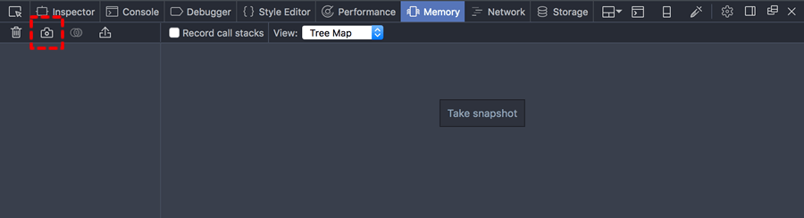
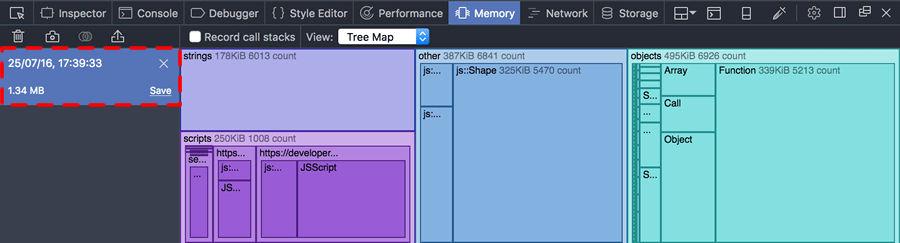
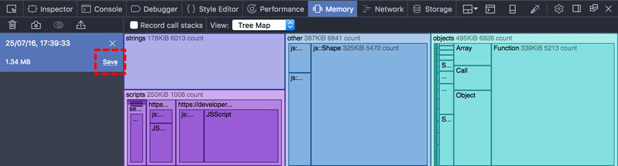

Before Firefox 50, the Memory tool is not enabled by default. To enable it, open the developer tool settings, and check the "Memory" box under "Default Firefox Developer Tools":
{{EmbedYouTube("qi-0CoCOXwc")}}
From Firefox 50 onwards, the Memory tool is enabled by default.
To take a snapshot of the heap, click the "Take snapshot" button, or the camera icon on the left:

The snapshot will occupy the large pane on the right-hand side. On the left, you'll see an entry for the new snapshot, including its timestamp, size, and controls to save or clear this snapshot:

To remove a snapshot, click the "X" icon:
If you close the Memory tool, all unsaved snapshots will be discarded. To save a snapshot click "Save":

You'll be prompted for a name and location, and the file will be saved with an .fxsnapshot extension.
To load a snapshot from an existing .fxsnapshot file, click the import button, which looks like a rectangle with an arrow rising from it (before Firefox 49, this button was labeled with the text "Import..."):
You'll be prompted to find a snapshot file on disk.
Starting in Firefox 45, you can diff two heap snapshots. The diff shows you where memory was allocated or freed between the two snapshots.
To create a diff, click the button that looks like a Venn diagram next to the camera icon (before Firefox 47, this looked like a "+/-" icon):
You'll be prompted to select the snapshot to use as a baseline, then the snapshot to compare. The tool then shows you the differences between the two snapshots:
{{EmbedYouTube("3Ow-mdK6b2M")}}
When you're looking at a comparison, you can't use the Dominators view or the Tree Map view.
The Memory tool can tell you exactly where in your code you are allocating memory. However, recording this information has a run-time cost, so you must ask the tool to record memory calls before the memory is allocated, if you want to see memory call sites in the snapshot. To do this, check "Record call stacks" (before Firefox 49 this was labeled "Record allocation stacks"):